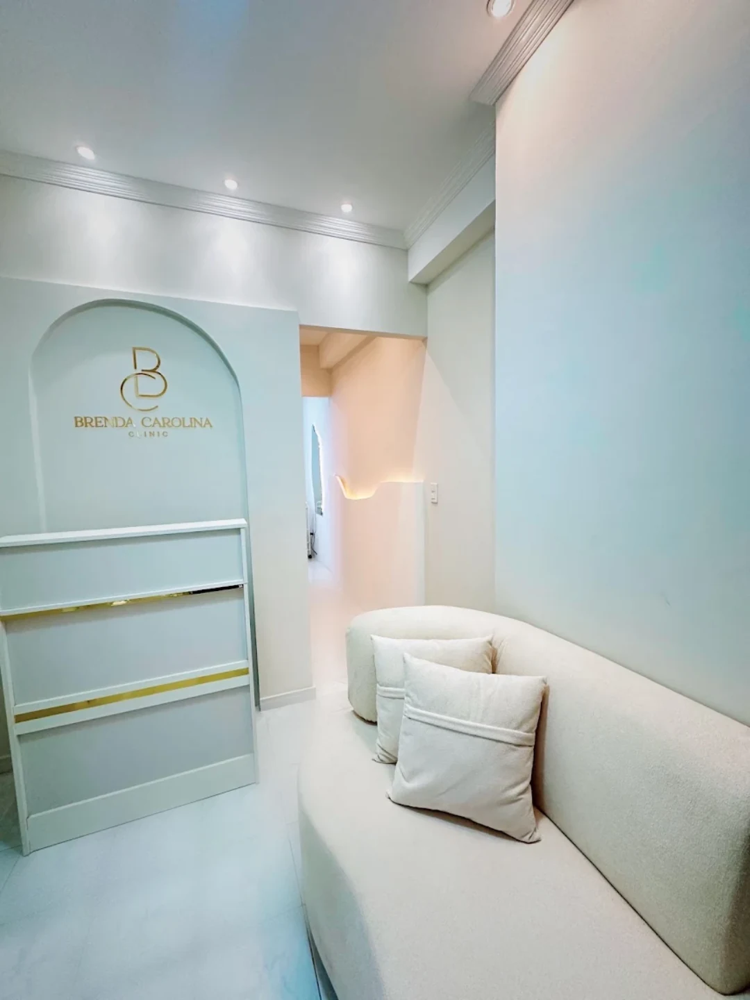

Drenagem linfática
Bre Redux
Método divulgado pela clínica para cuidados com o contorno corporal e a retenção de líquidos. A indicação depende da avaliação.
Conhecer Bre ReduxFisioterapia estética em Salvador
Métodos autorais e tratamentos faciais e corporais personalizados, com um olhar atento às necessidades de cada pessoa.
Parque Bela Vista, Salvador · Bahia
Protocolos da clínica
Cuidados corporais com avaliação individual e orientação profissional.
Drenagem linfática
Método divulgado pela clínica para cuidados com o contorno corporal e a retenção de líquidos. A indicação depende da avaliação.
Conhecer Bre ReduxDesobstrução central
Protocolo corporal com atenção à região abdominal, ao conforto e ao bem-estar. Converse com a equipe sobre a técnica e suas indicações.
Conhecer Método DCEstética personalizada
Conheça os procedimentos divulgados pela clínica e descubra qual opção é adequada ao seu momento.
Cuidados direcionados ao contorno corporal.
Saiba maisAvaliação e cuidados com a textura da pele.
Saiba maisTratamentos individualizados conforme as características da pele.
Saiba maisCuidados corporais com indicação individual.
Saiba maisConsulte a equipe sobre indicação e disponibilidade.
Saiba maisProtocolos de alta performance divulgados pela clínica. Consulte indicações e habilitação profissional.
Saiba maisLimpeza personalizada, cuidado dos lábios e orientação de skincare.
Saiba maisCuidados de acordo com as necessidades da sua pele.
Saiba maisConheça as opções disponíveis e agende pelo WhatsApp.
Saiba mais
Brenda Carolina ClinicConheça a clínica
Localizada no Parque Bela Vista, em Salvador, a Brenda Carolina Clinic reúne fisioterapia estética, protocolos corporais e tratamentos faciais personalizados.
Conheça o trabalho da profissional e tire suas dúvidas antes de escolher o procedimento.
Conheça nosso InstagramPara profissionais
Conheça as iniciativas de formação e consultoria divulgadas pela Brenda Carolina Clinic.
Perguntas frequentes
Entre em contato pelo WhatsApp para consultar horários disponíveis.
A indicação depende do seu histórico, objetivos e avaliação profissional.
Não. Resultados e quantidade de sessões variam conforme a pessoa, técnica e avaliação.
Parque Bela Vista, Salvador, Bahia. Confirme o endereço e horário com a equipe antes de ir.
Agende seu atendimento
Converse com a clínica para esclarecer dúvidas e marcar uma avaliação.
Agendar pelo WhatsAppRua Itatuba, 201
Parque Bela Vista, Salvador, BA